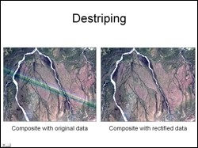
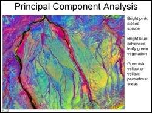
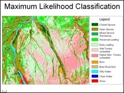

 The Toklat Basin is located north of the Alaska Range in the northeastern part of Denali National Park and Preserve. The objective of this study was to use Landsat ETM image to generate a landcover classification map of the study area, which would possibly help to delineate permafrost regions and would also indirectly help to understand the Toklat Basin Ecosystem. The first challenge in image processing was to remove stripes in the data that ran right across the study area. This was carried out by carefully determining the systematic shift in DN values in the striped regions in each individual spectral band and then digitally correcting it.
 Digital image processing to enhance land cover classes included generation of contrast stretching, generation of false color composites, density sliced vegetation indices, principal component analysis using all six reflective bands, and fusion in IHS domain. Field experience used to visually identify landcover classes on processed images indicated that the false color composite generated by coding PC3, PC1 and PC2 images in RGB, respectively, showed the greatest distinction in various land cover classes (see adjacent figure). This image was used further to carry out unsupervised and supervised landcover classification.
 The 12 landcover classes selected and shown in the final classified maps are closed spruce, open spruce, mixed spruce / deciduous, advanced leafing deciduous vegetation, early leafing vegetation, wet tundra (unleafed), higher elevation tundra (unleafed), burned areas, bare rock/soil, silty water, clear water and snow. The results of the study are very encouraging and have potential to serve as a fieldwork and planning tool for the Denali National Park and Preserve. The Landsat data used in this study was from June 16, 2001, a period when there is great diversity in the leafing stage of deciduous vegetation. For future studies, use of remote sensing image acquired in mid-July to mid-August data is recommended.